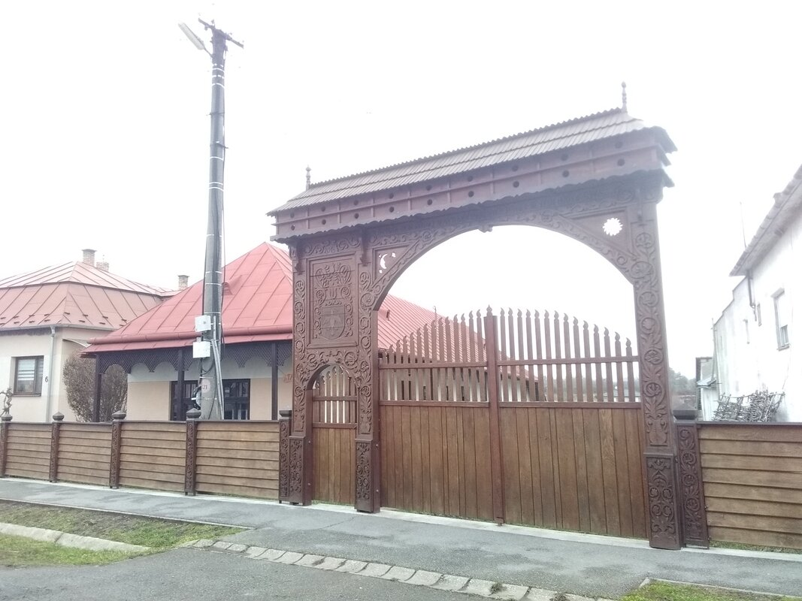
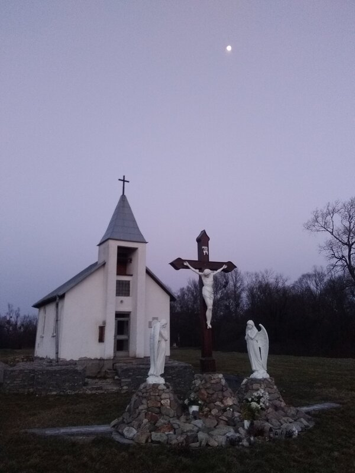
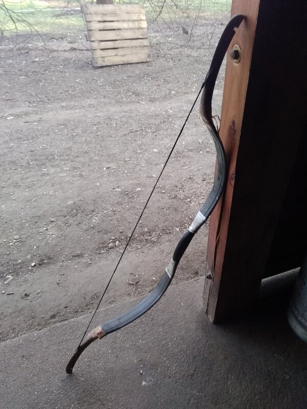
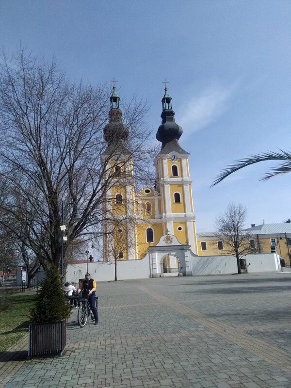
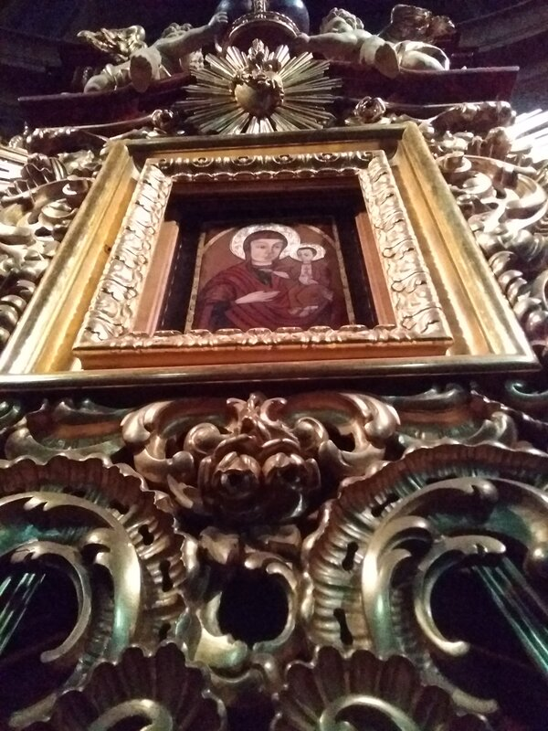
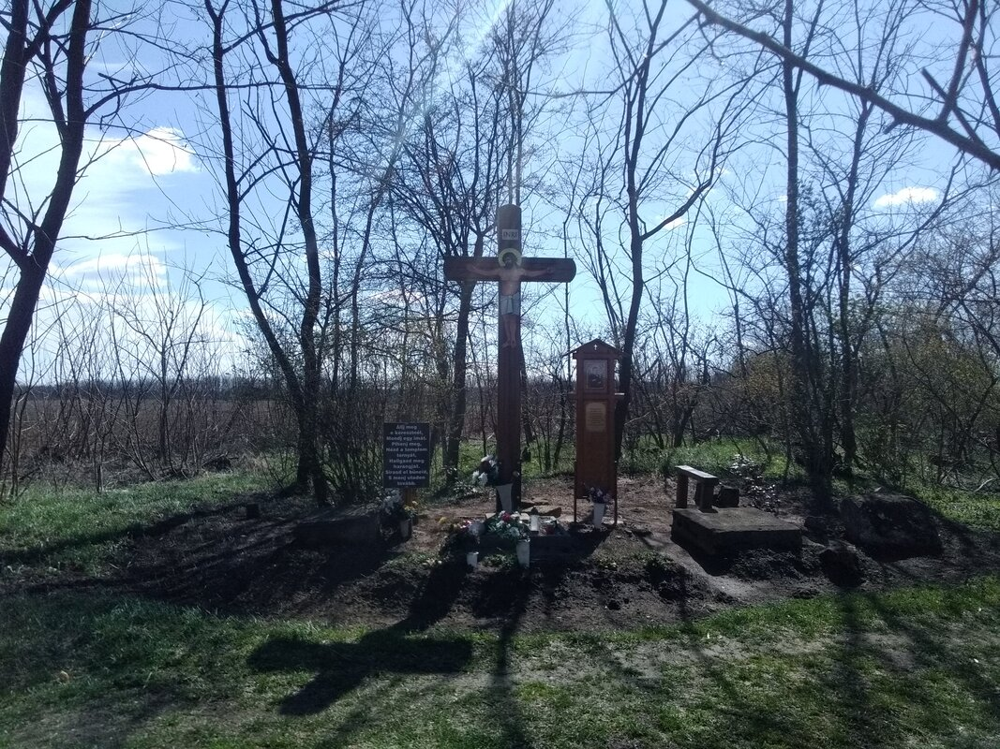

Happiness
I thought I was going to send some solid news today, and that passing the 7000 km mark would be my pretext. But I have to be honest—this is fake news. I don’t really know where I am in terms of kilometers. I have this estimation due to my intimate relationship with topographic applications that I use every day to navigate, avoid busy roads, impassable rivers, and just not lose my way. Let’s say I suspect the distance, but I haven’t calculated it. It must be around 7000 km, give or take 10%. Although, in general, it’s probably less than more, because I believe that in my situation, we tend to evaluate rather higher than lower...
But hey... Let’s leave the kilometers aside.
I travel places, I meet people. And since my departure, everyone has been magnificent—welcoming, generous. This makes my path magnificent as well, and I walk it serenely, without its vagaries being a burden in any way.
For some time now, I’ve been crossing villages that consist of two parts: one “normal” village, and then further out, on the outskirts or in a small remote corner, a second part that’s much more dilapidated—almost like slums. It’s very visible, and you can recognize a population of “Roms,” as they are called. The former Gypsies, sedentarized by the Soviet governments, living in difficult conditions without really being able to escape them, even though it seems local and governmental aid is mobilized to help.
I come across these places. Poverty. Promiscuity, with everything that always accompanies it... precariousness.
And yet, I must say that I don’t think I’ve come across one of these places without someone inviting me at least once to eat, drink coffee, or sleep.
It’s a lesson in humility for me every time. I am forced to appreciate the welcome and the gift, contrasted against their living conditions. How touching.
Ah yes, speaking of touching...
For some time now, I’ve been scratching a lot. It’s not touching—it’s irritating, but let me explain. I was scratching a lot (like, really a lot and uncontrollably), and it didn’t take me long to realize I had scabies. Local generosity? A dirty towel in a restaurant bathroom? A questionable bed in a questionable motel? It’s hard to know how or by whom. Especially since it’s the first time in my life that I’ve caught it (I’ve never had lice or crabs either...). But that’s the thing—when it’s the first time, and the body doesn’t know the problem, in this case, Mr. Sarcoptes scabiei from the mite family, it can take time for symptoms to appear. Sometimes 15 days or more before the itching starts. So, it becomes difficult to determine the origin of the contamination.
But here, I tried to contact all the people with whom I spent time to warn them about the possibility of contagiousness. It’s really contagious, those small beasts...
But no panic, I often wash my hands with soap or hydroalcoholic gel, so a handshake doesn’t involve much risk. No, the risk was when I got invited to sleep inside.
The problem is that with the practice of pilgrimage as I do, it’s difficult to get rid of the beast without a very effective treatment: ivermectin. And this product is prohibited in Hungary, where I am, and that’s problematic because the remaining solutions are really cumbersome. While the ivermectin treatment consists of taking pills with a large glass of water twice at eight-day intervals, the alternative treatments require brushing your entire body with a lotion, letting it stand for 8 or 12 hours depending on the mixture, applying a second layer, waiting again, and then washing with hot water and soap. At the same time, washing clothes—all clothes—at 60 degrees. And the groundsheet. And the sleeping bag. A lot of work...
You can see how it becomes really complicated for the camper that I am.
While I was explaining this on the phone to the people who had invited me to spend three nights with them some time after my contamination a few weeks ago—they live in the last big city in Slovakia before the border with Hungary—Michaela and her neighbor Bruno (Branislav) decided, without me being able to dissuade them, not only to find ivermectin on the black market (it’s also forbidden in Slovakia, as a result of European policies concerning coronavirus treatments, if I understood correctly—some drugs have been blacklisted...), but also to drive four hours to bring it to me in the neighboring country. And with homemade cake—two, in fact, because both of them had made one for me.
You see...
It leaves me speechless. Silent. Calm, in every way.
When I resumed my journey, after a coffee offered for the three of us by the pilgrims' inn where I was staying, I was immersed in a deep silence. Deep and full. Not empty. I was calm, serene, grateful, confident. I walked calmly. I sat down whenever I felt the need, wherever the place was suitable, and I took time to contemplate this silence and sink into it.
There is nothing to say... nothing to be said.
Of course, there are times when loud shouts try to reach my ears or my eyes. This is always the case. Whether it’s the din of war that I circumvent geographically, or those more distant, like the rumblings from French streets at the moment, or more simply, a bistro conversation I come across while having a coffee (or a slivovica!)...
But once I’ve finished paying attention to it, the trace of the writing, the sight, or the sound fades almost instantly. There are no leftovers, no residual clutter. It becomes like distant knowledge that doesn’t truly reach me—at least not until I decide, with conscious effort, to pay attention to it again.
This distancing is pleasant. The noise of the world remains distant, even as I cross it. When it is present, this distance, born of healthy silence, feels like crossing or visiting myself with each step. I say "healthy silence" because it comes from the calm of the one experiencing it, not from the absence of noise around them.
So, I regularly spend weeks alone in the woods, then pass through towns or villages, meeting people and forming connections. When I leave again, there’s this same distancing—I rediscover the silence where I left it and sink into it, burying myself pleasantly in its embrace. I am privileged; I am aware of it.
The practice of pilgrimage, or perhaps simply long-term walking, gently forces me into this abandonment. It constrains with a certain tenderness. The need to adapt to the path, in order to walk it for a long time, is both mandatory and essential. To achieve this, it’s necessary to move toward what is pleasant, nourishing, and reassuring, while abandoning what is not.
I had to leave behind objects too heavy to carry in my bag to avoid the pain of carrying them. Finally, it’s clear: to feel good, you must stop hurting yourself. It seems obvious, and yet I notice so many counterexamples.
This principle has slowly extended from the backpack on my back to the inner one, in my head and chest.
It’s no longer the non-essential objects I leave behind now, but the petty fears and anxieties of everyday life.
Where am I going?
Will I have enough to eat?
To drink?
To sleep?
What if this path leads nowhere?
And then, the worries about the future—because I will have to work, earn money, and return someday...
We can’t go long without leaving these false hassles aside. This is the moment when we begin to learn freedom and happiness. And the more one realizes this, the more one likes it, the less difficult it is to realize it and participate in it. In fact, the more you walk on its path, the easier it becomes to walk there...
I learn freedom, I learn happiness. I’ve discovered that you can’t find them, you can’t receive them, or give them—the only way to live them is to learn to be. And it doesn’t need much; in a way, it just “stops preventing them” from being, naturally...
The most frequent question I receive concerns the number of kilometers I do per day. But this is a question that no longer makes sense to me. The preoccupation with the number of kilometers traveled no longer exists at all. You now understand what I wrote earlier concerning the 7000 km fake news. A glance at the map tells me that I’m almost there, but in the end, I don’t know. I haven’t made the effort to calculate, despite being asked very often.
I measure my days, if I must, by the quality of the time that has passed. I walk when I want or need to. I stop as soon as it’s pretty enough to look at, and the notion of average mileage is completely absent. I don’t feel bad or guilty for having walked a little—that’s something that took me a long time to give up: feeling bad for not having walked a lot today. The concept of obligation, if it still exists, has been transferred to the pleasure of being.
And in my long walk experience, finding a pretty spot is extremely pleasant. Finding a suitable place to pitch the tent is pleasant. A source of fresh water to fill my water bottles and refresh myself. A lake or river where I can bathe, wash myself... A hot shower. A coffee. A glass of slivovica (a little plum!). A smile.
I take pleasure in such trivial details, and I’m amazed at the power they possess, the strength they wield. To say that finding mushrooms on my way, lighting a fire to cook them, and eating while sitting on the ground in front of my tent nourished me is an understatement. It certainly nourished my body, but also a whole part of me which, until I let it enjoy and live, was curled up in a withering and sterile non-existence.
The silence I listen to is a fullness, not an emptiness...
Then the inner discourse slowly fades away... The incessant brouhaha, which we no longer realize deafens our inner ears to the point of not only deafening ourselves but others too—not only inside but also outside—eventually dries up and goes silent. There is then nothing to hinder the full enjoyment of the contentment of a deep breath of fresh air, the freshness of a sip of spring water, the sight of a wild animal, the song of a bird, the scent of a fir tree, the delicacy of a flower petal, or the taste of a hazelnut...
And here I am, with an almost ecstatic feeling, even though no event has occurred to provoke it. I find myself laughing without having thought of anything funny. A huge smile splits my face as I stand totally alone in the woods. And yet, I can’t stop this smile that I don’t offer to anyone.
I am well. I am here. And it’s good...
I made the mistake of writing this text in French and translating it afterward. It’s not the same when I do that... But I hope you still get the point.
I wish you all the best. Be well and happy.


















0 Comments